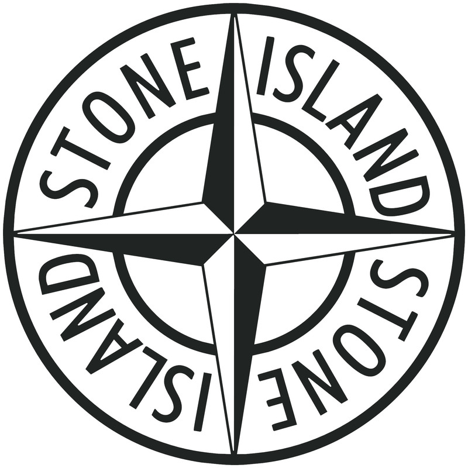

The Stone Island clothing brand appeared in 1982 as a product of the company, at that time named C. P. Company. Her "father" was Massimo Osti, who at that time was experimenting with industrial fabrics, trying to increase their wear resistance, as well as make them less sensitive to external factors such as rain, sunlight, and so on. The name of the brand was taken from a novel by Joseph Conrad — his description of "people of the sea" Osti considered symbolic enough to position the brand's strengths — its clothing should have been universal, durable and simple, like the uniform of the military or sailors.
As a result of his work under the Stone Island brand, unique items began to appear both in terms of the quality of the material and its processing technologies, and in terms of extreme design.
The roots of the technological procedures used in the manufacture of Stone Island items often go to various industrial areas, allowing the production of non-standard clothing. At one time, a real technological breakthrough of the company was the models created on the basis of fabric, which changed its color depending on the air temperature.
Gradually, thanks to the use of the above - mentioned technological moves, the company began to gain popularity in Europe. There are three clothing lines — the classic Stone Island, the designer line Stone Island Shadow and Stone Island Junior children's clothing line. Stone Island clothing is part of the A (luxury) segment of textile brands.
In 2011, Stone Island, without the participation of the C. P. Company, increased its turnover by 4 % and reached 51,000,000 euros.
Trademark clothing brand Stone Island is the presence on the left sleeve (on some models — on the shoulder) a small flap of fabric in the form of an embroidered Chevron logo (patch), in the form of a stylized image of the "rose", snap-on clothing two buttons.
